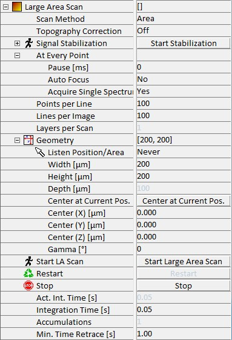

|
大面积扫描
|
在大面积扫描参数组中，可以定义采集二维或三维数据集所需的所有参数。在此参数组中可调整扫描几何形状或扫描速度等参数。
更多信息（操作指南）：

开始大面积扫描
按下此按钮使用当前输入的参数开始扫描和数据采集。
重新开始
此触发按钮使扫描使用当前输入的参数重新开始。
当前采集的数据集的数据将丢失。
每线点数
此参数允许用户更改每线的像素、数据点或光谱数量。
每图像线数
每图像线数允许用户选择在选择扫描区域（见下文）内扫描的线数。
每扫描层数
此参数定义在堆栈扫描（仅共聚焦模式）中记录多少层。对其他模式无影响。
几何形状
几何形状参数组允许选择所需的扫描区域，坐标在内部坐标系中给出（见图 3.2）。由于扫描台执行移动，可选几何形状受扫描台的扫描范围限制。可调整以下参数：
监听 位置/区域
单击图像中的位置后，单击的位置将被标记为扫描的新中心位置，或者允许选择所需的扫描区域或深度扫描线。
宽度 [µm]
宽度设置矩形扫描的尺寸。它始终是快速扫描方向的尺寸（一条线的长度）。
高度 [µm]
高度始终是矩形扫描的慢速扫描方向尺寸（矩形的高度）。如果执行深度扫描，此参数无效。
深度 [µm]
深度参数不仅与宽度结合用于深度扫描，还与宽度和高度结合用于堆栈扫描。在深度扫描中，它是慢速扫描方向的尺寸；在堆栈扫描中，它是从最上层到最下层扫描的距离。
中心位于当前位置
单击此按钮将内部坐标系中的当前坐标复制到扫描中心位置的相应字段中。
中心 (X/Y/Z) [µm]
扫描将围绕其执行的 X、Y 和 Z 中心位置坐标。
Gamma [°]
Gamma 标识扫描区域绕 Z 轴的旋转，相对于 X 轴测量。
为角度输入正值将使扫描沿数学正方向旋转。生成的图像将显示为沿数学负方向旋转。
扫描模式
使用此参数，可以从以下选项中选择扫描模式。
步进栅格
此模式是间歇区域扫描。在"在每个点"参数组（见下文）中定义的任务执行前，移动将停止，然后移到下一点。
区域
使用此选项在通过角度 Gamma 和输入的宽度和高度定义的平面（通常为 X-Y 平面）上执行扫描。样品定位器将在扫描完成后保持在最终位置。
深度
使用此选项在通过角度 Gamma 和输入的宽度和深度定义的平面（通常为 X-Z 平面）的垂直方向上执行单次深度扫描。样品定位器将在扫描完成后保持在最终位置。
堆栈
堆栈扫描是在不同深度执行的单次扫描的集合。执行的扫描次数取决于每扫描层数参数，不同深度级别取决于每扫描层数和深度参数的组合。各个扫描自动以递增数字标记。
在每个点
此参数组定义在步进栅格模式下每个点执行的操作。
暂停 [ms]
可以在每个点执行下一个任务之前定义暂停。
自动对焦
可以在每个点执行光谱自动对焦。参数可在 自动对焦中定义。
单光谱
如果此参数设置为"是"，则在每个点执行单光谱。
形貌校正
将此设置为"开"可在扫描过程中沿 Z 方向跟随记录的表面。表面可在 形貌校正中定义。
信号稳定
请参阅 信号稳定 部分。
实际积分时间（正向）[s]
只读值，显示测量开始后重新计算的每像素时间。这可能是由于 CCD 相机的最小周期时间（积分时间 + 读出时间）或形貌校正造成的。（仅适用于连续模式，不适用于步进栅格）
积分时间 [s]
积分时间定义了一个像素、数据点或光谱的时间。
累积次数
累积次数仅在步进栅格模式下使用。
最小回扫时间 [s]
此参数定义反向一行的时间，如果其值小于正向所需每线时间。
信号路由
触发 1/2/3 输出
触发输出可以设置为采样时钟或停止&前进时钟。
T1/2/3 占空比
设置占空比百分比。
T1/2/3 空闲状态
空闲状态可以设置为不关心、低或高。